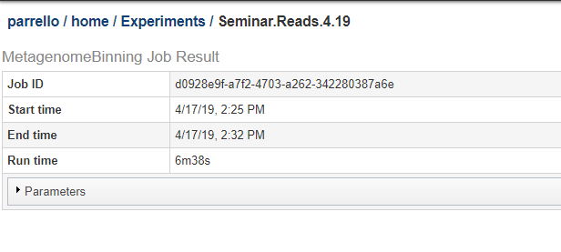

Using BV-BRC Services from the Command Line¶
Each of computational services offered at the BV-BRC web site is also available to BV-BRC command line users. We provide this access to enable the efficient processing of batches of data and to enable integration with existing data processing pipelines.
Most service-based data analyses in BV-BRC follow a similar pattern. A BV-BRC user either uploads his data to the BV-BRC workspace or chooses data already in the BV-BRC workspace from a previous upload or as the output of an earlier analysis run. He then chooses an analysis to perform, and constructs a description of the input parameters to the analysis. He submits a request to BV-BRC to perform the analysis and awaits the run to complete. When the run is complete, the user may either view the results on the BV-BRC website or download the output data to his computer for further processing and reporting.
When one uses the BV-BRC website for analyzing data using the BV-BRC services, all interactions for uploading and downloading data, choosing parameters, and running the service take place using interactive web forms on the BV-BRC website.
When we move to the command line, each interaction with the BV-BRC website is replaced with the invocation of a command line tool. We will work through an example to make these concepts clear.
One of the commonly used services at BV-BRC is the genome assembly service. This service takes as input one or more sequence read libraries and given on a set of parameters creates an assembled genome.
In this example, let us assume we have the following two paired-end read libraries, one single-end read library, and a reference assembly:
reads_A_1.fastq
reads_A_2.fastq
reads_B_1.fastq
reads_B_2.fastq
reads_C.fastq
ref.fa
We’ll also assume that these files are all residing on a computer that has the BV-BRC command line tools installed and that we have set up our command line environment (see Using the BV-BRC Command-line Interface for more information).
To use the command line services we need to be logged in to BV-BRC:
$ p3-login PatricUser
You are logged in as PatricUser
Since the read files are large, we will copy them to our BV-BRC
workspace before we submit the assembly job. The p3-cp command
will copy data from our local machine to a folder in the
workspace. The ws: notation is used to specify that the target
path is in the BV-BRC workspace:
$ ls *.fastq *.fa
reads_A_1.fastq reads_A_2.fastq reads_B_1.fastq reads_B_2.fastq reads_C.fastq ref.fa
$ p3-mkdir /PatricUser@patricbrc.org/home/AssemblyJob
$ p3-cp *.fastq *.fa ws:/PatricUser@patricbrc.org/home/AssemblyJob
Copying reads_A_1.fastq (XXX bytes)
Copy completed in 30 seconds
Copying reads_A_2.fastq (XXX bytes)
Copy completed in 30 seconds
Copying reads_B_1.fastq (XXX bytes)
Copy completed in 30 seconds
Copying reads_B_2.fastq (XXX bytes)
Copy completed in 30 seconds
Copying reads_C.fastq (XXX bytes)
Copy completed in 30 seconds
Copying ref.fa (XXX bytes)
Copy completed in 30 seconds
$ p3-ls /PatricUser@patricbrc.org/home/AssemblyJob
We will later see an example where the data copy operation is performed by the service submission script.
Now that we have uploaded our input data we may submit our assembly
job. The BV-BRC service submission scripts are all named starting with
p3-submit; the assembly service is thus named
p3-submit-genome-assembly. We can use the --help option to
determine the available options:
$ p3-submit-genome-assembly --help
p3-submit-assembly [-h] output-path output-name
--recipe Assembly recipe
--reference-assembly STR Reference set of assembled DNA contigs
--paired-end-lib P1 P2
--single-end-lib LIB
--workspace-path-prefix STR Prefix for workspace pathnames
as given to library parameters
We may now submit our assembly job. We will use the
--workspace-path-prefix parameter to shorten the library names
that we are passing to the command:
$ p3-submit-genome-assembly --recipe auto \
--workspace-path-prefix '/PatricUser@patricbrc.org/home/AssemblyJob' \
--paired-end-lib ws:reads_A_1.fastq ws:reads_A_2.fastq \
--paired-end-lib ws:reads_B_1.fastq ws:reads_B_2.fastq \
--single-end-lib ws:reads_C.fastq \
--reference-assembly ws:ref.fa \
'/PatricUser@patricbrc.org/home/AssemblyRuns' \
job-ABC-auto
Job submitted: ace5ad73-db90-49d4-b854-8ab7290abb77
Output will be written to /PatricUser@patricbrc.org/home/AssemblyRuns/.job-ABC-auto
Once the job is submitted we may use the p3-job-status command to
determine if the job is queued, running, or completed:
$ p3-job-status ace5ad73-db90-49d4-b854-8ab7290abb77
ace5ad73-db90-49d4-b854-8ab7290abb77: complete
When the job is complete, we can browse the output of the job. The output files for the job are written to the workspace in a directory that is named as the output name for the job prefixed with a period:
$ p3-ls '/PatricUser@patricbrc.org/home/AssemblyRuns/.jobABC-auto'
A general-purpose script, appserv-start-app can be used to submit a job to any
BV-BRC service. In order to do this, you need to specify the service ID, a JSON file
containing the parameters, and the path to a BV-BRC workspace (usually your home workspace).
We will show an example of how to do this for the Metagenome Binning Service (see Metagenomic Binning Service service).
You can see a copy of the parameter json on the job results page. Below, we show the top of a job results page. Click on the Parameters bar to expand it and see the JSON string for the parameters.

The JSON string from the above job is shown below.:
{
"contigs": null,
"srr_ids": null,
"output_file": "Seminar.Reads.4.19",
"skip_indexing": "0",
"output_path": "/parrello@patricbrc.org/home/Experiments",
"genome_group": "Seminar.Reads.4.19",
"paired_end_libs": [
"/rastuser25@patricbrc.org/Binning.Webinar/SRS014683_extract.1.fq",
"/rastuser25@patricbrc.org/Binning.Webinar/SRS014683_extract.2.fq"
]
}
Here the input is a pair of paired-end read files. If contigs were being submitted, paired_end_libs would be null
and the contig file name would be specified as a string in the contigs member.
This job is being run by parrello@patricbrc.org, so the home workspace is parrello@patricbrc.org/home/.
If we put the above JSON in a file named params.json, the submit command would be:
appserv-start-app MetagenomeBinning params.json "parrello@patricbrc.org/home/"
The script will respond with a job identifier, and the job will appear in your running-jobs list.